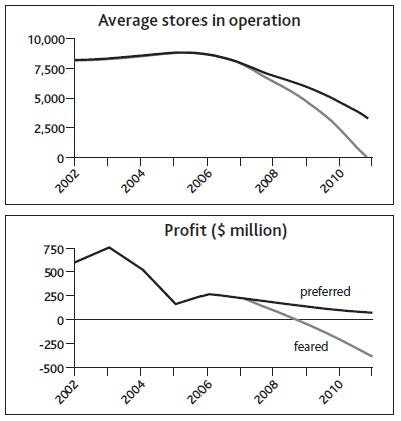

The following cases illustrate organization-wide challenges with long-term implications but short-term imperatives for action. The scale of each issue is important, and the cases highlight the time path over which strategic challenges evolve and resources develop or decline. Ensuring that these changes play out at the right speed is vital.
The starting point for the approach that we will develop in later chapters is shown in Figure 1.1 "Alibaba.com Growth and Alternative Futures".
These time charts display three important characteristics:
Figure 1.1 Alibaba.com Growth and Alternative Futures

We are used to thinking of the goliaths of the Internet age, such as Google, Amazon, and eBay, as unassailable leaders in their fields, but Chinese upstart Alibaba.com showed that eBay, for one, could be beaten to a massive opportunity, given a careful focus.
From the most humble resources—just $60,000 in capital and 18 poorly paid colleagues—the founder, Jack Ma, laid out a vision for what Alibaba could become. Although highly speculative, the vision was sufficiently promising to attract venture funding and some big-name advisers to his board.
The business focused on helping smaller Chinese firms that wanted to grow business globally but found existing options to be too expensive. The key proposition was to connect such companies to similarly small and midsized buyers around the world. In spite of the apparent potential and easier access to larger firms, Alibaba maintained this focus on small and medium-size enterprises (SMEs). It also stuck to offering the simple service of connecting buyers and sellers rather than getting involved in other complementary activities.
A critical issue right at the start was to get sellers and buyers to sign up. Not only did this mean offering the core service at no charge but also dealing with the fear of technology among this segment of target users by making the Web site ultrasimple to use. In 2000, the company started selling advertising space and research reports on its sellers, but revenues were still tiny, at just $1 million, and no profits were being made.
In 2001, Alibaba started charging for its services, though still at a low rate of $3,000 per year. However, by this time the service’s visibility and reputation were so strong that membership kept on climbing, passing the 1 million mark in 2002.
From this focused start, the company was able to extend its activities in several directions, first establishing a within-China service in the local language and then making a major thrust to develop business-to-consumer (B2C) and consumer-to-consumer (C2C) services. By 2007 the group was serving 24 million users and had effectively sealed victory over eBay, which exited the market.
These three features ensure that the charts provide a clear view of the challenge, and allow further details to be added later. This particular example happens to focus directly on a critical resource—registered users—and clarifies the absolute numbers: much more useful than derived ratios such as market share or abstract notions such as competitive advantage. Often, management’s concern will be directed at the financial consequences—in other words, revenues and profits.
Understanding the history of decisions that have already been made is essential, as they are driving the business’s trajectory into the future. Past additions to the services offered and to the customer groups targeted brought the business to its state in 2007. Success or failure in the company’s future choices on these and other issues will determine its trajectory forward from that point in time.
Figure 1.2 "Alternative Futures for Blockbuster Inc." shows preferred and feared futures for Blockbuster. Even with the best fortune and skilled management, the company will do well to sustain revenues and remain profitable, and it is hard to see how it might avoid closing more stores. Services such as Netflix are not the only threat—by 2008, increases in communications speed and data processing power were finally making the fully online delivery of movies and other content a practical reality. This threatened a still faster decline in store-based rental income. Note, by the way, that for Blockbuster to engage in online delivery of movies does not remove the challenge that this innovation creates for its stores and postal business. Even if it were successful in that initiative, someone would still have the challenge of managing the declining revenue from renting physical DVDs and finding ways to keep it profitable. Any profits from online delivery would be in addition to what is shown in Figure 1.2 "Alternative Futures for Blockbuster Inc.".
Figure 1.2 Alternative Futures for Blockbuster Inc.
Not all strategic challenges are so happily able to focus on sustaining spectacular growth in business activity and financial rewards. Other cases pose substantial threats, where the best that strategic management may be able to achieve is to resist decline or even closure.
Blockbuster Inc., from its startup and early growth in the late 1980s, effectively defined and dominated the market for renting movies to watch at home. Up to 1995, sales and profits climbed ever upward, driven by aggressive expansion of the company’s store network, both owned and franchised, voracious acquisition of smaller chains, and entry into many new country markets. From 1995, it proved hard to sustain profitability, and by 2000 pressures on revenues and profits escalated sharply with the launch of Netflix.com, a service that allowed consumers to order movies on the Internet for postal delivery and return. With the new convenience this offered consumers, and without the costly burden of store real estate and staff, Netflix was able to offer very attractive prices and soon started to steal consumers from Blockbuster.
Soon other providers such as Amazon offered a similar service, and Blockbuster found itself fighting for its life. It had no choice but to offer a comparable postal service, adding to the erosion of store revenues in spite of the company’s best efforts to make a positive advantage of the combined channels. As revenues suffered, marginal stores began to lose money, and closures became inevitable.